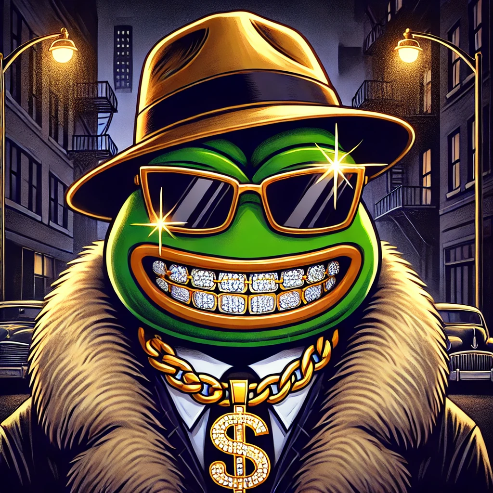

About Pepimp
Pepimp is the ultimate gangsta version of the iconic Pepe the Frog. We aim to bring Pepimp into the world of Web3, leveraging his popularity to create new and exciting opportunities.
Tokenomics
Pepimp is an interchain token available on multiple blockchain networks, including Base, BNB Chain, and Ethereum. This multi-chain support allows for canonical versions of the token across these blockchains, all sharing a single EVM address. This feature enhances accessibility and enables seamless transactions across platforms. Additional chains can be added based on community demand, ensuring Pepimp remains adaptable and user-focused.
How to Buy
To become a part of the Pepimp meme culture, follow our guide on how to buy and engage with Pepimp-related content and tokens.
Roadmap
We don't have time for bullshit
- Phase 1: Attract early adopters and true believers
- Phase 2: Launch massive marketing campaigns and secure listings
- Phase 3: Rise to the top 5 meme coins... or even claim the number one spot!
- Phase 4: Make Africa great again! unlock its full potential!